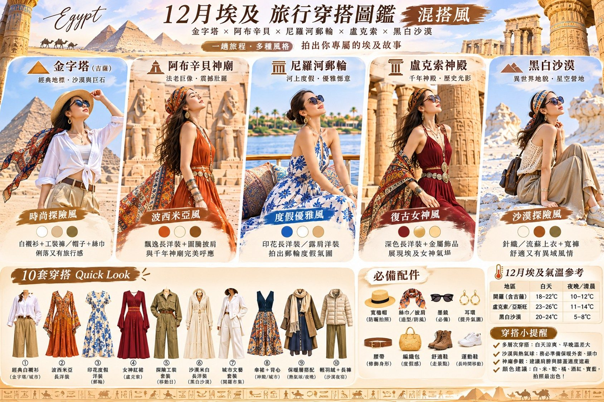

穿搭圖鑑

點圖片可以放大，左右滑動看細節。
上傳照片・試穿預覽
📷 上傳一張你的照片（建議正面站姿，肩膀要入鏡；全身照效果最好）
照片只在你的手機裡處理，不會上傳到任何地方。
照片只在你的手機裡處理，不會上傳到任何地方。
大小
旋轉
透明度
隱藏領口以上
上傳後會自動偵測肩膀、把衣服對好位置；之後也可以用手指拖曳、兩指縮放微調。
✨ 想要真的穿上身？用 AI 換裝
上面的預覽只是把衣服疊在照片上。想要自然的真實換裝照，可以複製下面這段指令，連同你的照片一起貼到 ChatGPT 或 Gemini 生成。
每天穿哪一套
打包時每放進一套就勾一天。編號對照上方圖鑑的「10 套穿搭 Quick Look」。
五大場景風格
| 場景 | 風格 | 重點單品 |
|---|---|---|
| 金字塔（吉薩） | 時尚探險風 | 白襯衫＋工裝褲／帽子＋絲巾 |
| 阿布辛貝神廟 | 波西米亞風 | 飄逸長洋裝＋圖騰披肩 |
| 尼羅河郵輪 | 度假優雅風 | 印花長洋裝／露肩洋裝 |
| 盧克索神殿 | 復古女神風 | 深色長洋裝＋金屬飾品 |
| 黑白沙漠 | 沙漠探險風 | 針織／流蘇上衣＋寬褲 |
必備配件
👒 寬檐帽防曬、拍照
🧣 絲巾／披肩造型、防風、進清真寺
🕶 墨鏡必備
✨ 耳環提升氣場
🪢 腰帶修飾身形
👜 編織包度假感
🥾 舒適短靴走景點
👟 運動鞋長時間移動
氣溫與小提醒
| 地區 | 白天 | 夜晚／清晨 |
|---|---|---|
| 開羅（含吉薩） | 18–22°C | 10–12°C |
| 盧克索／亞斯旺 | 23–26°C | 11–14°C |
| 黑白沙漠 | 20–24°C | 5–8°C |
氣溫數字取自穿搭圖鑑，是參考值。出發前一週再看天氣預報，atta 也會在群組提供每天的預報。
- 多層次穿搭：白天涼爽、早晚溫差大。
- 沙漠與熱氣球：一定要帶保暖外套、頭巾。
- 參觀神廟：建議遮住肩膀和膝蓋。
- 顏色建議：白、米、駝、橘、酒紅、寶藍，拍照最出色。
- atta 提醒：泳衣、外套、短袖 T 恤、棉質長袖內搭，前 3 天要有 2 件套頭毛衣。